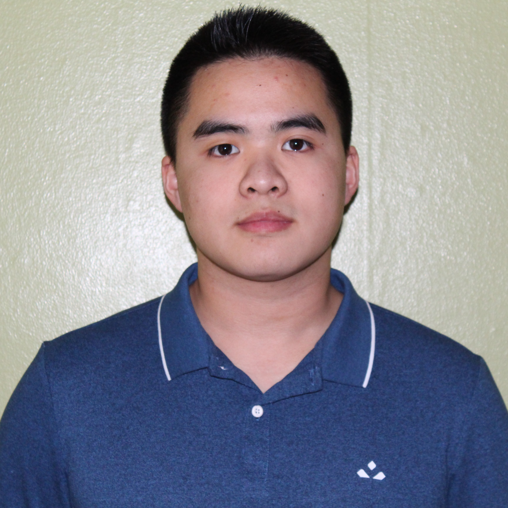

Anthony Vu
3rd-year Computer Science Co-op @ McMaster University and Schulich Leader.
üëâ vua11@mcmaster.ca
Technology Stacks
ASP.NET, Angular, TypeScript, C#
Python, Pandas, SQL
Laravel, PHP, Blade
MongoDB, Express, React, Node, GraphQL, Apollo Client
JavaScript, Tailwind